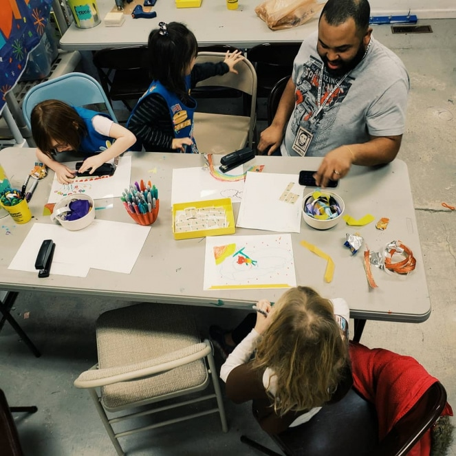

Donate
Support the Mission
Do you love that your donated materials skip the waste stream and make their way into creative hands?
It costs SCRAP to divert all these usable materials and make them available to our community. Some of our customer's favorite items are processed at a financial loss to our organization. Consider donating to SCRAP to help us offset these costs.
We count on your generosity as an individual, foundation, corporate sponsor, or partner.
How it Works
You feel the creative, environmental, and educational love from SCRAP. You return the love by adding to our resources so we can share with others. It becomes a circle of love that keeps giving – to you, to us, and to the entire community.
Here's How:
Make a one-time or recurring donation
Volunteer at one of our SCRAP Locations
Become a program sponsor (for more information, contact operations@scrapcr eativereuse.org)
Become an event sponsor (for more information, contact operations@scrapcr eativereuse.org)